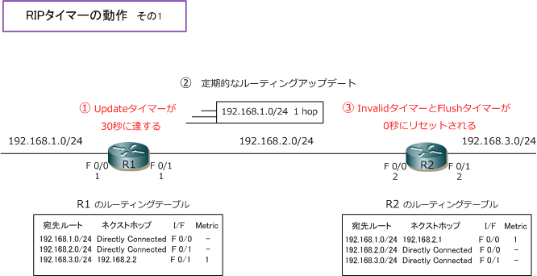
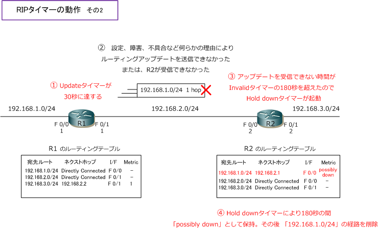
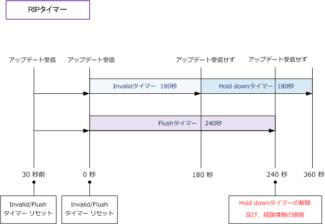

Distance Vector Routing - Update Invalid Hold down Flush
ディスタンスベクタ型ルーティングプロトコルのタイマー
ディスタンスベクタ型のルーティングプロトコル（RIP）には4種類のタイマーがあります。
| 4種類のタイマー | 説明 | RIPタイマー |
|---|---|---|
| Update | 定期的なルーティングアップデートの送信間隔。ルーティングアップデートの送信時に このタイマーは0秒にセットされる。そしてタイマーがまた30秒に達した時、ルーティング アップデートが再度送信される。Updateタイマーは、この動作を繰り返し行い続ける。 |
30秒 |
| Invalid | ルーティングアップデートを最後に受信してから、あるルートが無効であると認識する までの時間。ルーティングアップデートを受信するたびに、この無効タイマーが0秒に セットされる。ルーティングアップデートを受信できない時間が180秒に達すると、受信 できなかったあるルートは無効(Invalid)だと認識されて、Hold downタイマーが起動する。 |
180秒 |
| Hold down | ある経路がダウンしたことを示すアップデートを受信した時、その経路情報を誤って 再登録しないように、その経路情報がダウンしたことを全てのルータが認識できるよう するための待ち時間。無効タイマーが上限（180秒）に達した時か、ルートポイズニング などの到達不能を示すメトリック値（ホップ数16）の経路情報を受信した時に起動する。 |
180秒 |
| Flush | ルーティングアップデートにより受信した経路情報をルーティングテーブルに保持できる 時間。Flushタイマーが上限（240秒）に達した時、受信できなかった経路はルーティング テーブルから削除される。FlushタイマーはInvalidタイマーと同時に起動して、Invalidの タイマーと同様にルーティングアップデートを受信するとタイマーは0秒にセットされる。 |
240秒 |
下図は、正常に動作している時の状態です。定期的に30秒ごとにルーティングアップデートを隣接ルータに 送信するので、それを受信したルータはその都度、InvalidタイマーとFlushタイマーが 0 秒にセットされます。 そのため、正常時ではInvalidタイマーが上限に達しない（180秒に達しない）のでHold downタイマーが起動 したりすることはありませんし、Flushタイマーが上限に達しない(240秒に達しな)ので経路は削除されません。

一方、下図は何かの理由により180秒の間、R1からR2にルーティングアップデートが送信されなかった結果、 Invalidタイマーが上限（180秒）に達して [ 192.168.1.0/24 ] の経路に対し、Hold downタイマーが180秒間 R2で起動します。※ルートポイズニングを受信した場合は、Invalidタイマーが上限に達しなくてもHold down タイマーは起動します。Hold downタイマーの起動が終了すると [ 192.168.1.0/24 ] の経路が削除されます。

上図のようにInvalidタイマーが起動してから180秒経過してHold downタイマーが起動した場合、Hold down タイマーの180秒間が終了する前にFlushタイマーが先に終了することから、このFlushタイマーの終了によって Hold downタイマーは解除され、ルーティングテーブルからも 192.168.0.0/24 が削除されることになります。 ※ Invalidタイマー（180秒）＋ Hold downタイマー(180秒）の合計360秒より、Flushタイマーの240秒の方が早く終了するから。

これらの内容はRIPの仕様上の解説です。ネットワーク機器のメーカーは、これらのRIPの仕様にしたがって ソフトウェア上にRIPをプログラミングしますが、仕様に影響を与えないレベルで最適化して実装させる場合 が多いです。それゆえに、ここで解説した内容と実際のネットワーク機器は異なる動作をすることがあります。